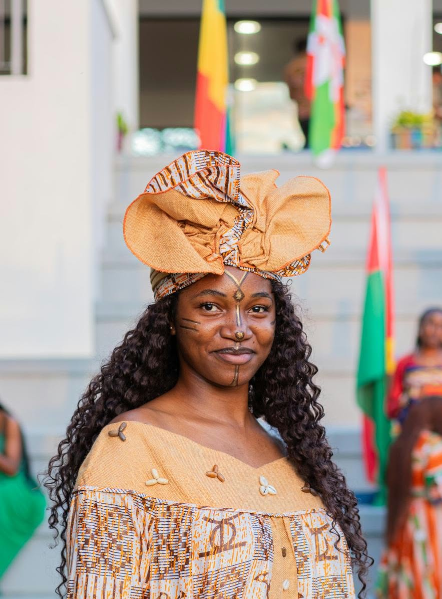

Ange Emmanuelle Ntsa Bineli
Software Engineering Student • Cameroon
Email: your-email@example.com
Why I Built 237 Horizons
Originally from Douala, Cameroon, and currently pursuing a BSc in Software Engineering at the African Leadership College of Higher Education (ALCHE), I created 237 Horizons to celebrate Cameroon’s extraordinary natural and cultural diversity—often called “Africa in Miniature.”
From the volcanic peaks of Mount Fako and the twin crater lakes of Manenguba to the waterfalls of Chute de Lobé, royal palaces, vibrant cultural communities, and iconic local meals, this platform invites visitors to explore Cameroon thoughtfully and respectfully.
Technical & Creative Focus
- Semantic HTML5, Responsive CSS3 & 3D Interactive UI Design
- Accessible Web Development & Clean Project Architecture
- Green Computing & Environmental Stewardship
- Cultural Preservation & Community Storytelling